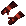
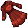
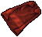
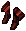
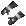
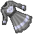
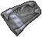
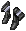
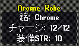
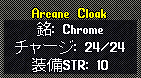

Arcane装備について
Arcane装備は、秘薬がない状態でも魔法を使うことができる装備品です。
１．Arcane装備の種類
| 種類 |
Arcane gloves |
Arcane robe |
Arcane cloak |
Arcane thigh boots |
| 使用可能 |
 |
 |
 |
 |
| 使用不可 |
 |
 |
 |
 |
２．Arcane装備の作り方
Arcane装備を作成するためには、以下のものが必要になります。
- 高品質のLeather gloves, Robe, Cloak, Thigh boots
ただし、Leather glovesとThigh bootsは、Normal leatherで作成したものでなければなりません。
- Arcane gem
Arcane gemは、Controller, Golem, Juka mage, Juka lordの戦利品として入手できます。
作り方は下記のとおりです。
- 高品質のLeather gloves, Robe, Cloak, Thigh bootsとArcane gemをバックパックに準備します。
- Arcane gemをダブルクリックし、「1.」で準備した装備品をターゲットに指定します。
- 裁縫スキルが60以上あれば、上の画像のようなArcane装備が作成されます。
Arcane装備は下の画像のようにチャージ数が表記されていますが、そのチャージ数はArcane装備作成時の裁縫スキルによって
上下します。
（初期チャージ数）＝（裁縫スキル）／5 [端数切捨]

裁縫スキル60で作成 |

裁縫スキル120で作成 |
３．Arcane装備の消耗と回復
Arcane装備は、下の条件で魔法を使用したときにチャージ数を消費します。
- 秘薬を持たずにMageryまたはNecromancyの魔法を詠唱したとき。
- 秘薬コストが-100％となってない状態でMageryまたはNecromancyの魔法を詠唱し、秘薬消費の判定となったとき。
秘薬コスト-100％の場合、Arcane装備は消耗しません。
4種類あるArcane装備は消費判定の優先順位があり、Thigh boots→Robe→Cloak→Leather glovesの順で消費していきます。
チャージが0となったArcane装備は白く変色しますが、Arcane gemを使うことで使用回数を回復させることができます。
使用回数の回復量は裁縫スキルによって変わります。
- 裁縫スキルが0〜99.9・・・初期チャージ数の80％（端数切捨）回復
- 裁縫スキルが100以上・・・初期チャージ数の100％回復
作成時とは違い、裁縫スキルが59.9以下でもチャージ数を回復することが可能です。